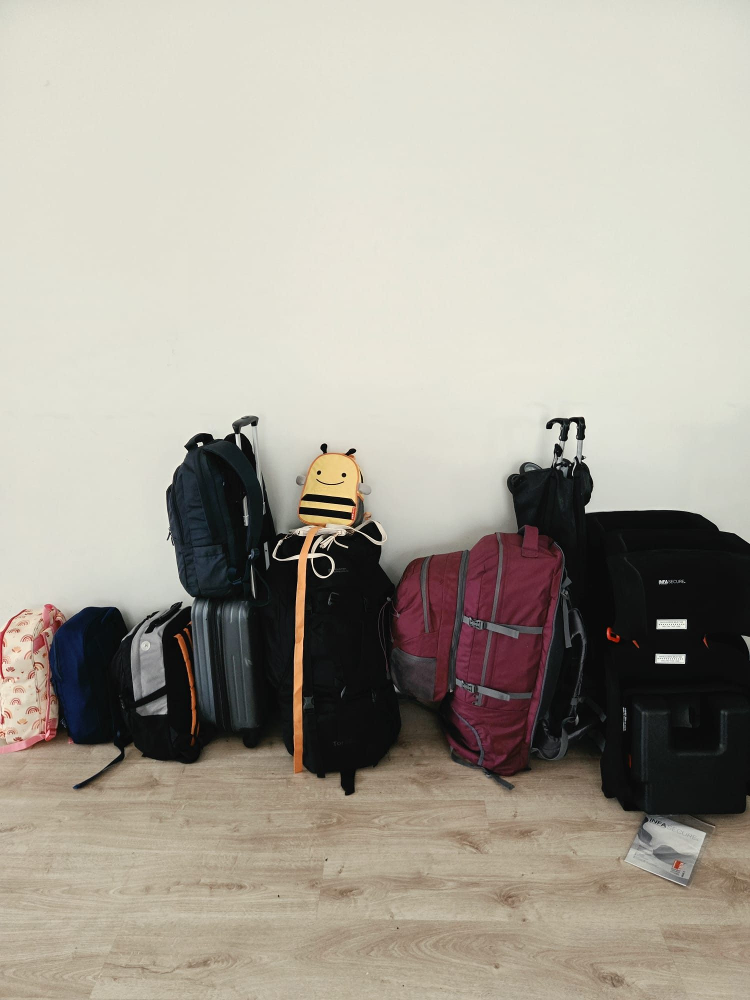
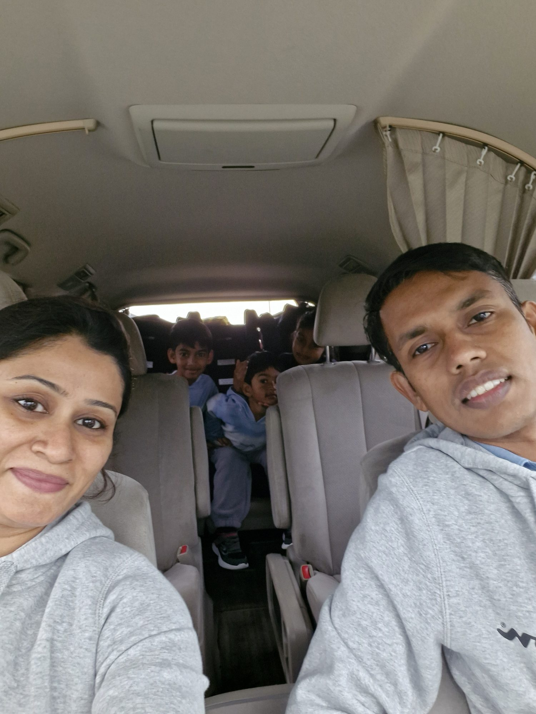
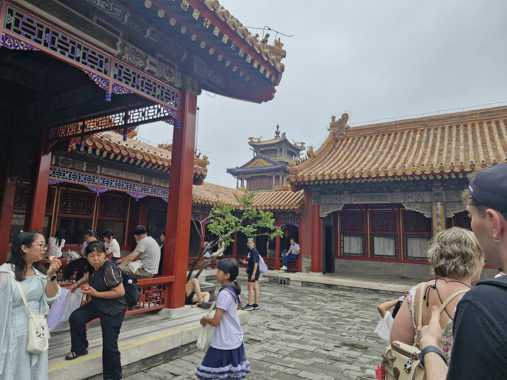
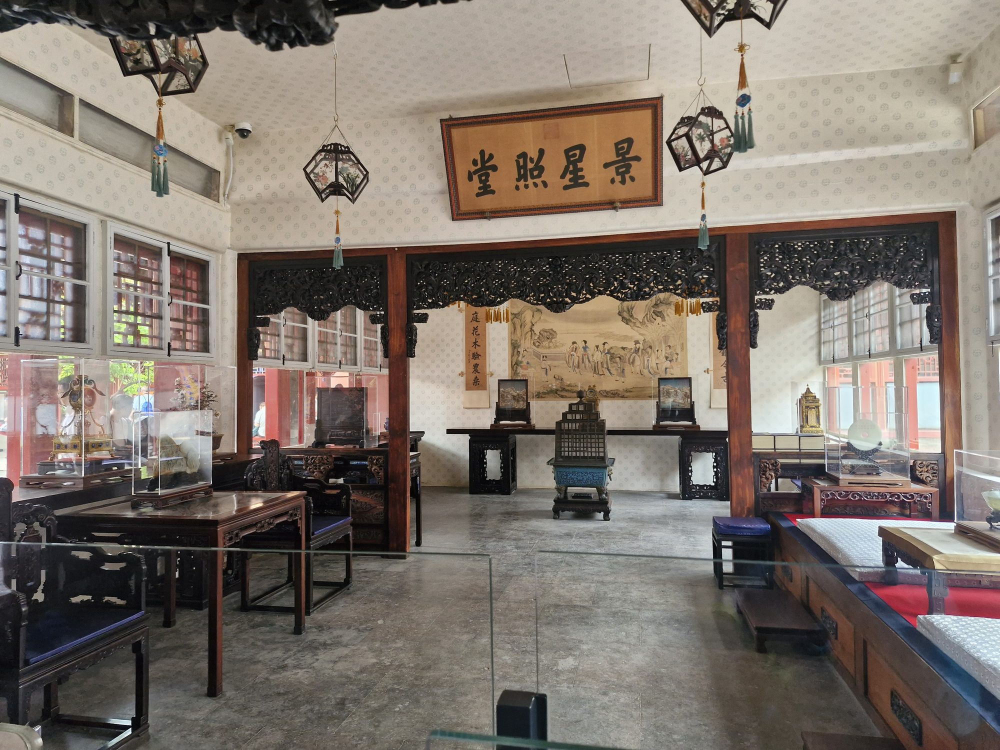
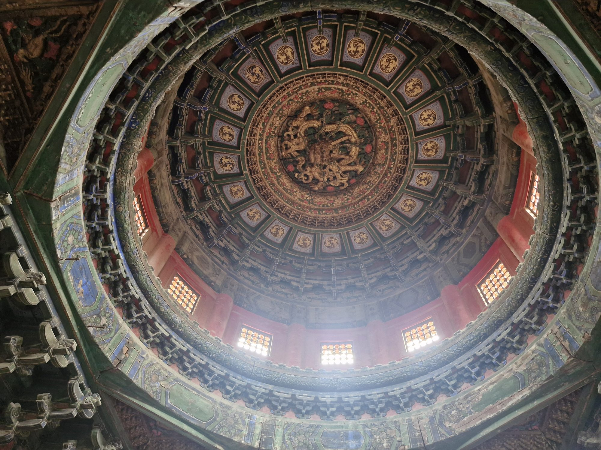
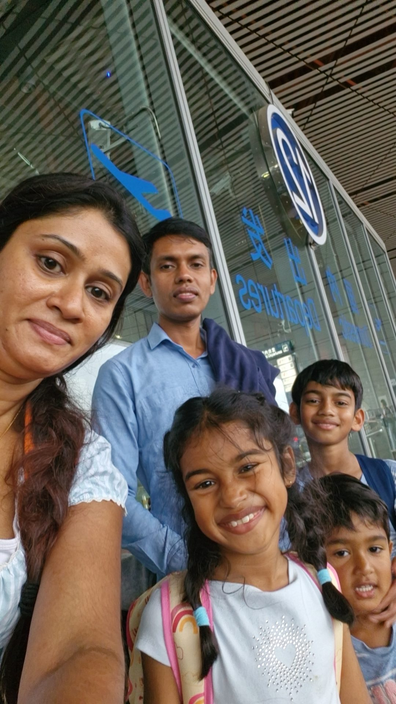
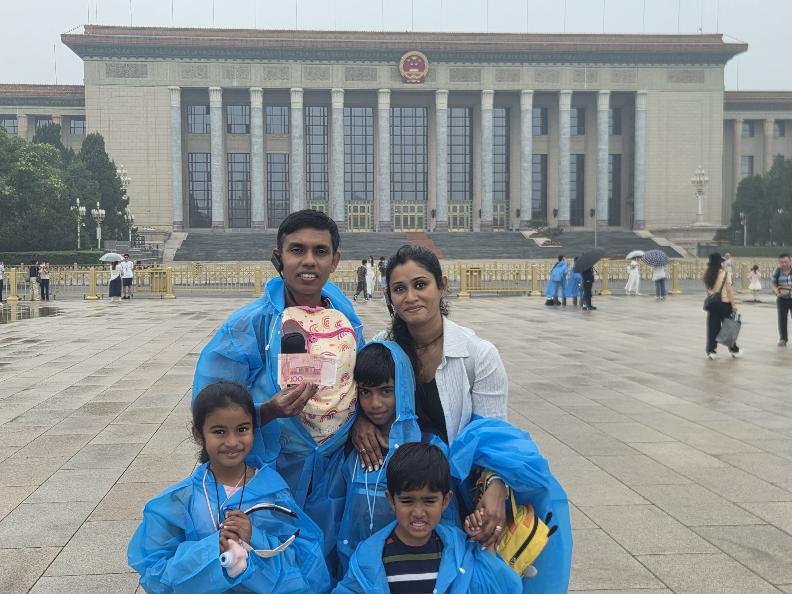
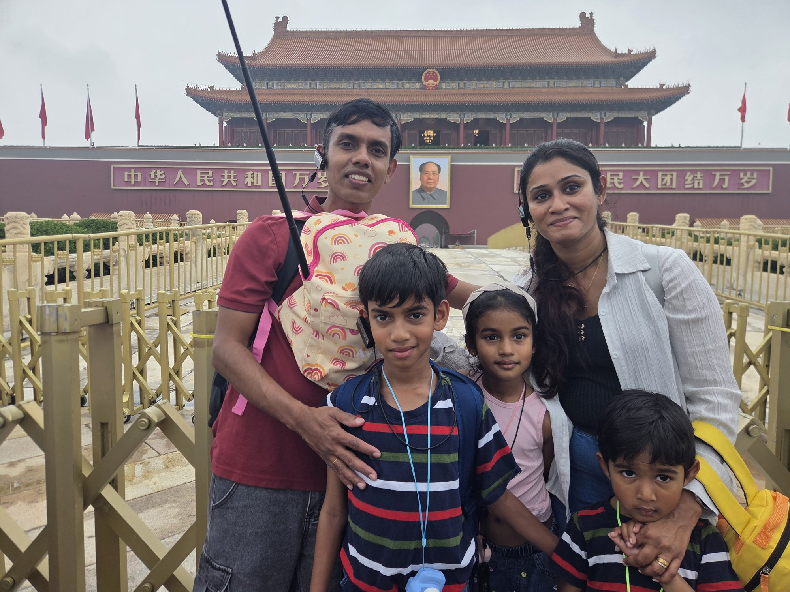

Issue 01 · July 2026
🇨🇳 CHINA
Munasinghe Travel Magazine
CHINA
Beijing · The Forbidden City · The Great Wall
★ 600 Years of Empire
🏯 Forbidden City
🧱 Great Wall
INSIDE: Where 24 emperors ruled for 500 years · The 21,000 km wall we walked at sunrise · Peking Duck at the imperial banquet · Forbidden City's 9,999 rooms · Polar route at -55°C above Mongolia
Munasinghe Family · Wed 10 Jul + Fri 7 Aug 2026
The Journey · Chapter One
One month.
Fifteen countries.
It begins here.
Every issue of this magazine is one country — and every country is one chapter of the same journey: one family of five, thirty nights on the road, from the Great Wall of China to the top of Europe and home again.
This is where it starts. We fly out of a New Zealand winter, land in Beijing, and the map unrolls from there — the Alps, the Danube, the canals and cathedrals, all the way to a day inside the world's smallest country — before Beijing catches us one last time on the way home. This page sits at the front of every issue: it will always tell you where we've been, where we are, and where we're headed next.
The Route · 15 Countries · 33 Cities · 30 Nights
01China ★
02Austria
03Czechia
04Hungary
05Slovenia
06Italy
07Switzerland
08Germany
09France
10Netherlands
11Belgium
12Denmark
13Sweden
14Vatican
⌂Home
Today — China: where it all begins. Beijing's Forbidden City on the way out, the Great Wall on the way home.
— Issue 01 · China · The Journey —
Before We Left · The Packing
One month. Three kids.
Two seasons in one bag.
This was the biggest journey we had ever attempted — one month, five of us, three of them children — packed in the cracks between work and school runs. On a trip this long there is no room for mistakes; every item had to earn its place. The strangest part of all: we were leaving the middle of a New Zealand winter and landing in the thick of a European summer, so the jumpers stayed home and we packed, instead, for heat we couldn't yet feel.
We packed to a rule — light and simple for every day, but always one sensible backup tucked behind it. Toiletries kept to the essentials (body wash, shampoo, conditioner). When it was finally done, the whole month fit into two large backpacks and four small ones, plus a single hand-luggage bag packed just for the China stopover — and, for four-year-old Avin, a little backpack of his own with a strap for us to hold. A stroller and three folding car seats rounded it out. Backpacks, not suitcases — because three children and cobblestones don't mix with wheels.
01
Two Seasons, One Bag
Two shorts, two dresses and a set of active wear each — plus two spare dresses, for when a dress beats shorts. The boys, Avisha and Avin, in shorts by day with one pair of trousers held in reserve; Aviann in dresses, with hair bands, and oil and gel for their hair.
Summer clothes only
02
Feet & Sun
A pair of shoes and a pair of walking slippers each — hard soles for the sightseeing miles, soft ones for tired feet. Then the sun armour: sunscreen, five pairs of sunglasses, bucket hats, a refillable bottle each, and aloe gel for the evenings.
Sun kit for five
03
The Medicine Bag
Panadol, ibuprofen and cetirizine — every one in both tablets and syrup, so there's a dose for every age. Throat lozenges, Quick-Eze for bloating, nasal spray, plasters and wound cream.
A dose for every age
04
School on the Road
Three weeks out of term, so school came too. A daily journal each; Avisha's two Narnia books and Aviann's Charlotte's Web — their Term 3 reading, read ahead; online homework along the way; and a colouring book and activity book for Avin.
Term 3, in advance
05
Three Little Cameras
One small camera each, from Shein, so all three could shoot their own view of the trip. The hard part was hunting down three 32GB micro-SD cards — the one size the little cameras would take.
3 cameras · 3 photographers
06
The Clever Finds
Three folding car seats from Kmart — 2.5 kg each, lightweight and packable — for comfort over a month of roads. European adapters for every charger. Eye masks with a built-in pillow, so small heads can sleep upright on the long flight. And a stash of home: instant noodles, soup, mac & cheese and 3-in-1 coffee, for the late and hungry arrivals.
2.5 kg car seats · sleep + a taste of home
— Issue 01 · China · Before We Left —
BEFORE WE LEFT · THE PILE BY THE DOOR
One month,
against the wall.
This is what a month for five looks like the night before — lined up and ready to be carried out the door at dawn.

Photo · Munasinghe
Two large backpacks and four small ones, three folding car seats at 2.5 kg each, a stroller — and, standing guard on top, Avin's little bee backpack with a strap for us to hold. Backpacks, not suitcases: three children and cobblestones don't mix with wheels.
— Issue 01 · China · The Pile by the Door —
No. 01 · A Letter from Beijing
Welcome to
the Middle Kingdom
Beijing began our adventure, and Beijing ended it. Two stopovers — one outbound, one home — bracketed a whole European summer. On the way out we landed at 04:40 into a dawn already humming in Mandarin. On the way home: the same airport, the same dumpling stalls, the same cold dry air — only heavier now, with a summer's worth of memory.
Between them lay two of China's gifts to the world. First the Forbidden City — six hundred years of imperial power set in red walls and golden roofs. Then the Great Wall, twenty-one thousand kilometres of stone thrown across mountains so steep we could not believe human hands had built them.
This is the first issue of our magazine — a record of five of us, two adults and three children aged four, eight and eleven, moving through China hand in hand and wide-eyed. And a thank-you to the country that gave the trip its biggest history lesson, and its loveliest morning light.
— The Munasinghes, July 2026
In this issue
- A Letter from Beijing02
- The Forbidden City03
- Tiananmen Square, in the rain04
- The Great Wall at Mutianyu05
- Tastes of Beijing06
- Reflections + What's Next07
ARRIVAL · BEIJING · 4:30 AM
Rain, no raincoats,
and a map that lied.
Our first hour in China taught us how to travel here — a shuttle summoned by WeChat in the dark, payment apps juggled at a poncho stall, and a drive that ran three times longer than Google swore it would.
Fri 10 Jul 2026Capital Airport → Hotel → Forbidden CityLanded 04:30

Photo · Munasinghe
All five of us and every bag, folded into the transfer van for the ride into Beijing — three children still half-asleep in the back.
China begins the moment you land — and it does not wait for you to catch up. We touched down at half past four in the morning, bleary and wired, three children draped over us like coats. There was one small mercy in the dark: we had packed a single hand-luggage bag for exactly this stopover, so while other families queued at the belts, we walked straight past baggage claim and out into the cool Beijing morning. A message to our hotel over WeChat, and a shuttle appeared to carry us in.
Half past four in the morning, three sleeping children, one bag between us. The China-only carry-on earned its place before the sun was even up.
Then the first plan came undone. Our guide messaged ahead — it's raining at the Forbidden City, bring your raincoats — and ours, of course, were folded neatly inside the main luggage we had just sailed past. So our very first purchase in China was a fistful of cheap ponchos. Paying for them was its own adventure: WeChat Pay refused several of our cards, and we fell back on AliPay, grateful we had deliberately loaded different cards onto different apps before we left. Here cash is nearly extinct; your phone is your wallet, and a backup wallet is not paranoia — it is planning.
The last lesson came on the road. Google Maps promised the collection point was thirty minutes away. Ninety minutes later we were still crawling through Beijing traffic — because Google cannot see China's live congestion at all. It was the Didi app, checked on a hunch, that told us the truth. Rule one, learned before breakfast: in China, trust Didi, not Google. Ponchos on and phones charged, we drove on into the rain — toward six hundred years of emperors.
— Issue 01 · China · Arrival —
FEATURE · BEIJING · DAY 02
A walled city,
once forbidden.
Inside the world's largest palace complex, twenty-four emperors ruled for five centuries. Its gates were built to make a visitor feel small. Five courtyards in, we did.
Fri 10 Jul 2026Forbidden City5 hrs · 8.5 km walked

Photo · Munasinghe
Deeper into the palace — red halls, golden roofs, and an ornate gilded pavilion rising over the crowd. Every courtyard opens onto another.
We came in through the Meridian Gate on a Friday morning, and the children slowed under every archway. Aviann, eight and serious, kept whispering "but a million workers, though?" — and she was close: more than a million carpenters, stone-cutters and masons laboured fourteen years to raise this place for the Yongle Emperor, who in 1406 had moved his capital from Nanjing to Beijing. Avisha, eleven, photographed all of it — bronze incense burners, gilded dragon ceilings, cobblestones worn smooth by centuries of imperial feet.
Avin, four, ran ahead with his arms wide, shouting "RED!" — and he was right too: the walls burn vermillion, the roofs imperial yellow, a pairing so vivid it almost stings. From its completion in 1420 until the Qing fell in 1912, no commoner crossed these gates without the emperor's leave; to try was to die. Behind walls ten metres tall, ringed by a moat fifty-two wide, stand 980 buildings across seventy-two hectares.
The emperor was the Son of Heaven, and only Heaven was permitted ten thousand rooms.
So he stopped at 9,999.
What we did not expect was the repetition. Three immense halls — Supreme Harmony, Central Harmony, Preserving Harmony — each rise on a triple-tiered marble terrace, and beyond each courtyard lies another, and another. The architecture is built to humble you. By the Imperial Garden at the back we had crossed five courtyards and stopped speaking altogether. The emperor's power was meant to overwhelm. Six hundred years later, it still does.
— Issue 01 · China · 03 —
THE FORBIDDEN CITY · IN OUR OWN WORDS
A childhood dream,
one room at a time.
Raised on Chinese and Korean historical dramas, walking through the real palace — every hall, every courtyard — was a dream I had carried for years. The rain only made it gentler.
Fri 10 Jul 2026The Forbidden CityEvery room · bucket list complete

Photo · Munasinghe
One room, of hundreds — carved black screens, painted lanterns on their tasselled cords, a bronze censer, and the emperor's things behind glass.
We reached the meeting point four minutes before pickup — and stood in the drizzle as our guide waited another five for the stragglers. Then the gates, and everything I had hoped for. I grew up on Chinese and Korean historical dramas, on palace intrigues and throne rooms and emperors in silk; to walk through the real thing — hall after hall, courtyard after courtyard, every room on our list — was a dream years in the making. We saw all of it. We ticked off the whole bucket list.
I grew up watching emperors on a screen. Today I walked through their palace, one room at a time.
The weather, oddly, was on our side. Beijing in July is meant to be punishing, but the rain kept the worst of the heat off us — though by the end we were damp with a mix of drizzle and sweat. Our one real mistake was Avin's stroller: we had left it behind, so our four-year-old walked the entire palace on his own small legs. He managed. Barely. So did we.
The adventure came on the way home. We ordered a Didi back to the hotel — but Beijing has a dozen hotels with almost the same name, and the one we tapped was the wrong one. Our driver, who spoke no English, delivered us confidently to the wrong door. What could have been a crisis became the kindest moment of the day: he simply phoned our real hotel, got the address, drove us there himself, and refused any extra fare. Not every wrong turn ends badly. Some end with a stranger's quiet kindness.
— Issue 01 · China · The Palace —
THE FORBIDDEN CITY · LOOK UP
The dragon
overhead.
For all the grandeur at eye level, the palace keeps its finest trick for anyone who thinks to look up.

Photo · Munasinghe
A caisson ceiling — ring within gilded ring, each drawing the eye further up to a single dragon coiled at the very centre, carved in green and gold and lit only by the small high windows.
— Issue 01 · China · Look Up —
BEIJING · THE LONG DAY'S END
A good lunch, a fever,
and a 2:50am flight.
The outbound stopover ended the way the best travel days do — with a cheap, delicious meal we stumbled into, a grateful nap, and one small worry we didn't see coming.
Fri 10 – Sat 11 Jul 2026Beijing → the night flightWheels up 02:50

Photo · Munasinghe
All five of us at Beijing Capital, under the Departures sign — checked in, worn out, and ready for the long flight on.
Back at the hotel and finally dry, we did the most ordinary and most rewarding thing a traveller can do: we walked out with no plan and let the neighbourhood decide. A few streets away we found a small restaurant, sat down, and ate one of the best lunches of the day — fresh, generous, and so cheap we checked the bill twice. Then back to the room for a hot bath and a quick, grateful nap.
Our flight out of Beijing left at ten to three in the morning, and the hotel ran its airport shuttle only until half past nine at night. So we set an alarm for half past eight, peeled ourselves off the beds, packed up, and rode out into the dark toward the terminal.
Ten to three in the morning, three children asleep on our shoulders — one of them warmer than he should have been.
It was at the airport that the day turned tender. Avin told me he felt cold, so I pulled a jumper over him. It was only after we cleared security that a health officer approached us gently: the thermal scanners had flagged that our littlest was running a minor fever. That was the chill he had felt. Poor Avin — four years old, halfway around the world, quietly running a temperature and not quite able to say so. We held him a little closer as we boarded, and carried our first small worry up into the night.
A note from further down the road: there was nothing to fear. Avin was simply exhausted. We let him sleep the whole flight and kept the water coming — the Panadol, of course, was packed in the very luggage we had left behind — and by the time we reached Germany, the fever had lifted and our littlest was himself again.
— Issue 01 · China · Departure —
TIANANMEN SQUARE · DAY 02 · IN THE RAIN
The largest square
in the world,
in a poncho.
Our raincoats were exactly where we couldn't reach them — sealed in the main luggage we'd sailed past at the airport. So the first morning in China began with five thin blue ponchos and a walk across sixty football pitches of wet stone.
Fri 10 Jul 2026Tiananmen Square440,000 m² · in the rain

Photo · Munasinghe
All five of us in ponchos on Tiananmen Square, the Great Hall of the People behind — and, held up to the camera, a ¥100 note that carries a picture of that very building on its back.
Tiananmen Square is the largest public square on earth — some 440,000 square metres, around sixty football pitches of open stone — and we crossed it in the rain on our very first morning in China. We had packed raincoats, carefully; they were simply unreachable, zipped inside the main luggage. So we did what everyone around us was doing and bought a fistful of thin blue ponchos, and the children pulled them on over their little cameras and pronounced themselves waterproof.
Sixty football pitches of wet stone, five blue ponchos, and three children who decided the rain was the best part.
The giants of modern China ring the square: the Great Hall of the People down one flank, the Monument to the People's Heroes rising in the centre, the marble huabiao columns, and — ahead of us — the Gate of Heavenly Peace. Avi held up a ¥100 note for the camera; its back shows the Great Hall standing right behind him, and holding the one up to the other was too neat a coincidence to waste.
— Issue 01 · China · 04 —
TIANANMEN · THE GATE OF HEAVENLY PEACE
Under the
famous gate.
At the square's north end stands Tiananmen itself — the Gate of Heavenly Peace — Chairman Mao's portrait over the central arch and the Forbidden City waiting just beyond.

Photo · Munasinghe
All five of us under the Gate of Heavenly Peace, the rain easing at last. The two red banners read "Long live the People's Republic of China" and "Long live the great unity of the world's peoples"; through the arch lies the Forbidden City.
— Issue 01 · China · The Gate —
COVER STORY · MUTIANYU · DAY 30
Stone, soldiers,
and smoke signals.
Twenty-one thousand kilometres of wall, built by nine dynasties across two thousand two hundred years. We walked one tiny piece of it — and felt the weight of all the others.
Fri 7 Aug 2026Mutianyu Section3 hrs · 4 km · 800 stairs
📷 images/china/day-30-great-wall-mutianyu-hero.jpg
HERO PHOTO · TBD
Watchtower 14, Mutianyu Section — restored in the Ming Dynasty (~1500), still standing, still impossibly perched on a knife-edge ridge.
You don't appreciate the Great Wall from photographs. Photographs flatten it. In photographs the Wall looks like a long ribbon laid across a green landscape. Up close, however, you discover something the camera cannot show: the Wall does not follow the landscape. It punishes the landscape. Where the mountain rises, the Wall rises with it — not at a sensible diagonal, but straight up, in a 60-degree staircase that has you grabbing the rail and gasping. The soldiers who patrolled it did so in armour. The masons who built it dragged stones up these same slopes. That fact alone changes how you walk it.
We took the cable car up from Mutianyu village around mid-morning. The cable car deposits you at Watchtower 14, and from there the Wall winds in both directions. We chose west. Within five minutes the kids had stopped asking how long it would take and started asking why anyone would build something this insane. By Watchtower 12 we were stopping at every parapet just to breathe and stare. By Watchtower 10 — perched on a peak that drops away on three sides — Aviann said quietly, "I think I'm going to remember this when I'm old."
The Wall does not follow the mountain. The Wall conquers the mountain. So did the soldiers who stood on it. So did we.
What makes Mutianyu special among the visitable sections is the restoration. The Ming engineers who rebuilt this stretch in the late 1300s and early 1400s did so in brick — a step up from the rammed earth of earlier dynasties — and most of the bricks are still here. Each watchtower has its original arrow-slits, its smoke-signal platforms, its tiny stone chambers where soldiers slept. You can put your hand on a 600-year-old wall and feel the cool of the stone. You can stand at an arrow-slit and look at the same view a Ming sentinel looked at, before turning to light a fire and warn the next tower that something was coming.
— Issue 01 · China · 05 —
THE WIDER WORLD · CHINA AND THE OUTSIDE
The country that
closed the door.
For most of history China was the richest, most advanced civilisation on earth. Then, for three centuries, it turned its back on the world — and the world, when it finally forced its way in, found a giant that had fallen behind.
The Wall · from 220 BC
The Great Wall you walked at Mutianyu was China's oldest foreign policy, written in stone — a barrier raised over two thousand years to keep out the horse-nomads of the northern steppe. To stand at an arrow-slit is to stand at the edge of the Chinese world, looking out at the very thing it feared.
The Mongols · 1279
And yet the wall was not enough. In 1279 the Mongols under Kublai Khan swept over it and conquered the whole country — the first time all of China was ruled by outsiders. It was in that open, Mongol century that a young Venetian named Marco Polo reached the emperor's court and carried the legend of Cathay home to Europe.
The closed door · Ming & Qing
Then China turned inward. The Ming banned private sea trade; the Qing squeezed all foreign commerce through a single gate at Canton. Just as Europe's factories and steamships began to multiply, China sealed itself off, sure it needed nothing from anyone. It was this long shutting of the door — our guide told us — that let the West race ahead and left China behind.
The reckoning · 1839–1860
When Britain wanted China's tea and silk and pushed opium in return, and the Qing tried to stop it, the gunboats came. Two Opium Wars shattered the empire, took Hong Kong, and forced the ports open — the start of what China still calls its "Century of Humiliation." The door, shut too long, was now broken off its hinges.
The land that gave the world paper, printing, gunpowder and the compass — and then, for three hundred years, kept them behind a wall.
— Issue 01 · China · The Wider World —
★ TASTES OF THE TRIP
Six things we ate
and won't forget.
Street-cart jianbing at dawn, imperial duck at dusk — Beijing fed us as richly as it schooled us.
📷 images/china/
food-01-peking-duck.jpg
01
Peking Duck 北京烤鸭
Lacquered duck carved into mirror-thin slices, rolled in warm pancakes with cucumber, scallion and a slick of hoisin. A dish fit for a dynasty.
📍 Quanjude · ¥288 · Day 30
📷 images/china/
food-02-jianbing.jpg
02
Jianbing 煎饼
A vast crêpe folded hot around egg, scallion, crisp wonton and chilli-bean paste, griddled while you wait. Breakfast on the move.
📍 Wangfujing Street stall · ¥10 · Day 02
📷 images/china/
food-03-jiaozi.jpg
03
Pork & Chive Jiaozi 饺子
Hand-folded dumplings, boiled, dipped in black vinegar and chilli oil. The children ate twelve apiece — we ordered a second steamer.
📍 Hutong eatery · ¥40 · Day 02
📷 images/china/
food-04-tanghulu.jpg
04
Tanghulu 糖葫芦
Candied hawthorn on a bamboo skewer, its glassy shell cracking to sour-bright fruit. Avin demanded one at every street corner.
📍 Tiananmen pavement seller · ¥10 · Day 02
📷 images/china/
food-05-noodles.jpg
05
Zhajiangmian 炸酱面
Hand-pulled wheat noodles under a deep soybean-and-pork sauce, strewn with cucumber and radish. Beijing's comfort bowl — slurped loudly.
📍 Mutianyu village · ¥35 · Day 30
📷 images/china/
food-06-jasmine-tea.jpg
06
Jasmine Tea 茉莉花茶
Refilled without asking — at the airport hotel, after every meal, everywhere. The taste of the trip's quiet moments.
📍 Everywhere · ¥0–20 · Days 02 + 30
— Issue 01 · China · 06 —
REFLECTIONS · CHINA
Two stopovers,
five childhoods
changed.
They told us China would be a "stopover" — a bracket around the real trip. They were wrong. Beijing held the journey's biggest history lesson, and the Great Wall its biggest "I cannot believe this is real". If the children keep one thing from it decades from now, let it be this: the world is impossibly old, humans have done impossible things, and you can still lay your hand on those things and feel that they are real.
What we will carry home: the smell of charcoal and jasmine, the sound of the cable car gears clanking up the Mutianyu mountain, the moment the Forbidden City emptied of crowds at closing time and we stood alone in the Imperial Garden for ten seconds before the guards moved us along.
Favourite moment
Aviann's whispered "I think I'm going to remember this when I'm old" at Watchtower 10.
Hardest moment
The Forbidden City heat at 2pm. We took shelter under a 600-year-old gate.
If we come back…
A whole week. Xi'an's terracotta army. Maybe a Yangtze cruise.
— Avinesh, Lana, Avisha, Aviann & Avin Munasinghe
Beijing · 10 July + 7 August 2026
Munasinghe Travel Magazine
No. 01 · Issue One of Fifteen
★ NEXT ISSUE ★
AUSTRIA
Hallstatt's salt mines, the Sound of Music hills, and an emperor's marble city by the Danube.